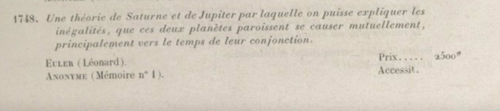

Least-Squares Method
- Describe the mathematical formulation of the linear least-squares problem.
- Apply the optimality condition to find a solution candidate and analyze its optimality.
- Apply the least-squares method for system identification.
- Apply elementary error analysis on the least-squares problem.
Section 1A Bit of History
Who invented the least-squares algorithm?
In 1748, the French Academy of Science posed the following challenge: use Newton's law of gravity to explain how Jupiter and Saturn cause each other to speed up or slow down. Euler came up with a response and won the prize. His response included an equation relating 8 orbital elements. To find the values of these 8 unknowns, he consulted the astronomical observation archive and found 75 observations — leading to the question:
How do you find 8 unknowns from 75 equations?

Consider a simpler version of this problem, with two unknowns $X_1$ and $X_2$ and three equations:
Finding $X_1$ and $X_2$ is not straightforward. For example, the first two equations give $X_1 = 2$, $X_2 = 2$, but these values do not satisfy the third equation.
In 1805, the "mystery mathematician" (Legendre) came up with a systematic solution:
Find $X_1$ and $X_2$ that satisfy the equations with the least amount of error.
He defined the residual for each equation:
and aimed to minimize the sum of squared residuals:
This is the least-squares approach. Later, Gauss provided a probabilistic justification: the least-squares estimate gives the "most likely" values of $X_1$ and $X_2$ under a Gaussian assumption on the observation error — a justified assumption by the central limit theorem. The method is widely used because of its simplicity, flexibility, and because it only requires vector calculus and linear algebra.
Section 2Mathematical Formulation
Assume there are $n$ unknown variables $(X_1, \ldots, X_n)$ and $m$ observations $(Y_1, \ldots, Y_m)$ related by the linear model:
where $(W_1, \ldots, W_m)$ represent measurement noise. In compact matrix form:
For any estimate $\hat{X}$, define the residual $e = Y - H\hat{X}$. The least-squares estimate minimizes the squared norm of the residual:
We denote the objective function as:
Section 3Solution to the Least-Squares Problem
We use the first-order optimality condition to find candidate minimizers.
For an unconstrained problem $\min_{x \in \mathbb{R}^n} f(x)$ with $f$ differentiable, if $x^\star$ is the minimizer, then $\nabla f(x^\star) = 0$.
The first-order optimality condition identifies candidates for optimality. A point satisfying $\nabla f(x^\star) = 0$ may be a minimizer, maximizer, or saddle point — further analysis is needed.
Use the definition of the gradient in Section 9 and the geometric method to derive the expression for $\nabla J(\hat{X})$ defined in (2.2).
Applying the optimality condition $\nabla J(\hat{X}) = 0$ yields the normal equations:
When $H^\top H$ is invertible, the unique solution is:
Show that any $\hat{X}$ satisfying the optimality condition (3.1) is a global minimizer by showing:
$$J(X) - J(\hat{X}) = \|HX - H\hat{X}\|^2 \geq 0 \quad \text{for all } X$$For the three-equation example from Section 1, the least-squares objective is:
Setting $\nabla J(\hat{X}) = 0$ gives:
3.1Uniqueness of the Solution
The matrix $H^\top H$ is invertible if and only if the null space of $H$ is empty, which requires all $n$ columns of $H$ to be linearly independent. Since $H$ is $m \times n$, this requires $m \geq n$ — at least as many measurements as unknowns.
Geometrically, each measurement is an inner product between a row $H_k$ of $H$ and the unknown $X$:
Invertibility requires measuring $X$ along at least $n$ linearly independent directions. When the null space of $H$ is empty, the minimizer is unique: if $\hat{X}$ and $X'$ are both minimizers, then $H\hat{X} = HX'$, and an empty null space forces $\hat{X} = X'$.
For any $m \times n$ matrix $A$:
$\dim(\mathcal{N}(A)) + \dim(\mathcal{R}(A)) = n$
The number of linearly independent columns equals $\dim(\mathcal{R}(A))$ and the number of linearly independent rows equals $\dim(\mathcal{R}(A^\top))$. The two are always equal.
Any $\hat{X}$ solving the normal equations $H^\top H \hat{X} = H^\top Y$ is a global minimizer of $\|Y - H\hat{X}\|^2$.
If $H$ has empty null space (at least $n$ linearly independent rows), the minimizer is unique:
3.2Regularization Technique
When $H$ has a non-empty null space (too few independent measurements), there are infinitely many minimizers. We add a penalty on $\|\hat{X}\|$ and solve:
Show that the solution to the regularized problem is:
Argue why $H^\top H + \lambda I$ is invertible for all $\lambda > 0$, regardless of $H$.
Also show that $X^\star = \lim_{\lambda \to 0} \hat{X}_\lambda$ is the minimum-norm solution among all minimizers of $\|Y - H\hat{X}\|^2$, and equals $H^\dagger Y$ where $H^\dagger$ is the pseudo-inverse.
Section 4Application: Linear System Identification
Consider a discrete-time linear system:
where $z(t) \in \mathbb{R}^d$ is the state (e.g. deformation of an aircraft wing) and $A$ is unknown. We want to estimate $A$ from data $\{z(0), z(1), \ldots, z(t_f)\}$ by minimizing the one-step prediction error:
Setting $X = \text{vec}(A) \in \mathbb{R}^{d^2}$ (vectorize row by row), the dynamic update becomes $Y(t) = H(t)X + W(t)$ where $H(t)$ is a block-diagonal matrix built from $z(t)$. Stacking over all time steps gives $Y = HX + W$, and the least-squares solution applies directly.
Show that the objective (4.1) can be written as $\min_{\hat{X}} \sum_{t=0}^{t_f-1} \|Y(t) - H(t)\hat{X}\|^2$ with solution:
The minimizer is unique when $H$ has $d^2$ linearly independent rows, which occurs when there are $d$ linearly independent state vectors in $\{z(0), \ldots, z(t_f - 1)\}$. This is the persistence of excitation condition — all modes of the system must be excited for successful identification.
Numerical demonstration of system identification for a mass-spring system with two springs. See the Jupyter notebook.
Section 5Error Analysis
The estimation error from the least-squares algorithm depends directly on the minimum singular value of $H$. We first review the singular value decomposition.
5.1Mathematical Review: Singular Value Decomposition
For an $m \times n$ matrix $H$ with rank $r$, the SVD admits three equivalent representations:
1. Sum of rank-one matrices:
where $\sigma_i > 0$ are singular values, $u_i \in \mathbb{R}^m$ and $v_i \in \mathbb{R}^n$ are orthonormal vectors.
2. Compact matrix product:
where $U \in \mathbb{R}^{m \times r}$, $\Sigma \in \mathbb{R}^{r \times r}$ diagonal with positive entries, $V \in \mathbb{R}^{n \times r}$, and $U^\top U = V^\top V = I_{r \times r}$. Note $UU^\top$ projects onto the range of $H$, and $VV^\top$ projects onto the orthogonal complement of the null space of $H$.
3. Full matrix product: Extending $U$ and $V$ to square orthogonal matrices $\tilde{U}$ (m×m) and $\tilde{V}$ (n×n):
Pseudo-inverse: $H^\dagger = V\Sigma^{-1}U^\top = \sum_{i=1}^r \frac{1}{\sigma_i} v_i u_i^\top$, satisfying $H^\dagger H = VV^\top$ and $HH^\dagger = UU^\top$.
Matrix norm: $\|H\| = \max_{x \in \mathbb{R}^n} \frac{\|Hx\|}{\|x\|} = \max_i \sigma_i(H)$ (largest singular value).
5.2Elementary Error Analysis
Working in the SVD basis (with $r = n$ for a unique minimizer), transform variables as:
In this basis, the observation model becomes $\beta_i = \sigma_i \alpha_i + \omega_i$ for $i = 1, \ldots, n$, and the minimizer takes the simple form $\hat{\alpha}_i = \beta_i / \sigma_i$. The estimation error then simplifies to:
Assuming $\text{rank}(H) = n$, the unique least-squares estimate $\hat{X}$ satisfies:
Assuming homogeneous noise with magnitude $\sigma_W$, this yields the bound:
For randomly collected data with $m$ rows, $\sigma_{\min}(H) \sim \sqrt{m}$, giving $\|X - \hat{X}\| \lesssim \frac{\sqrt{n}\,\sigma_W}{\sqrt{m}}$.
Use the SVD to express the regularized least-squares solution (3.3) as $\hat{X}_\lambda = \sum_{i=1}^n c_i v_i$. Give the expression for the coefficients $c_i$. Take the limit $\lambda \to 0$ and show it equals $H^\dagger Y$.
Section 6Application: Auto-Regressive Models
Given time-series data $\{z(0), z(1), \ldots, z(t_f)\}$ (scalar), the linear auto-regressive model of order $n$ predicts future values from the last $n$ observations:
The unknown coefficients $a_1, \ldots, a_n$ can be estimated via least-squares once (6.1) is cast as $Y = HX + W$.
By suitable definition of $Y$, $H$, $X$, and $W$, express (6.1) in the vector-matrix form $Y = HX + W$. Give the size and expression for each, in terms of $a_1, \ldots, a_n$, $z(0), \ldots, z(t_f)$, and $W(n), \ldots, W(t_f)$.
Download the provided data file with $\{z(1), \ldots, z(2T)\}$, $T = 100$. Split into training (first 100) and test (last 100) sets.
- Write a function that learns an AR model of order $n$ from the training set.
- Evaluate the training error: $\frac{1}{T-n}\sum_{t=n+1}^{T} (\hat{z}(t) - z(t))^2$.
- Plot training error vs. $n$ for $n = 1, 2, \ldots, 10$.
- Evaluate and plot the test error on the remaining 100 entries.
- Can you identify the true model order from your results?
In practice, the model order is unknown. Statistical criteria such as the Akaike information criterion (AIC) provide principled ways to select the order that balances fit and overfitting. We do not cover these techniques in this course.
Section 7Application: Curve Fitting
Given time-series data $\{(t_k, Y_k)\}_{k=1}^m$, choose $n$ basis functions $\{\psi_1(t), \ldots, \psi_n(t)\}$ (e.g. polynomials, Fourier modes) and model each observation as:
Stacking gives $Y = HX + W$ where $H_{k,i} = \psi_i(t_k)$, and the unknowns $X = [X_1, \ldots, X_n]^\top$ are the expansion coefficients.
Find the expression for $H$ when fitting a linear curve ($n = 2$, $\psi_1(t) = 1$, $\psi_2(t) = t$).
Is it a good idea to use the basis $\psi = \{\sin(t), \cos(t), \sin(t + \pi/3)\}$ or $\psi = \{t+1,\; t^2-t,\; t^2+3t\}$? Explain your reasoning.
Section 8Programming Exercise
Track a target with constant but unknown acceleration. The position is $r(t) = [r_x(t), r_y(t)]$, and with constant acceleration:
The unknowns are $X = [a_x, b_x, c_x, a_y, b_y, c_y]^\top$ and the noisy observations are $Y_1(t) = r_x(t) + W_1(t)$, $Y_2(t) = r_y(t) + W_2(t)$.
- (a) Write the observation in the form $Y(t) = H(t)X + W$. Specify $H(t)$.
- (b) Use the provided data files (time-stamps and measurements) to estimate $X$.
- (c) To predict the target position at $t = 10$, which option would you choose?
- (A) $(10, -90)$
- (B) $(20, -80)$
- (C) $(15, -100)$
- (D) $(15, -80)$
Section 9Appendix: Mathematical Review on Gradients
We review two approaches to computing gradients of functions on vector spaces.
Gradient via partial derivatives. For $f: \mathbb{R}^n \to \mathbb{R}$, the gradient at $x$ is the $n$-vector of partial derivatives:
For example, $f(x) = x_1^2 + \cdots + x_n^2$ gives $\nabla f(x) = x$.
Let $f(x) = \frac{1}{2}x^\top Ax + b^\top x$ where $A$ is symmetric $n \times n$ and $b \in \mathbb{R}^n$. Show that $\nabla f(x) = Ax + b$.
Geometric (coordinate-free) approach. This method works on any vector space $V$ with inner product $\langle \cdot, \cdot \rangle$. Define the directional derivative of $f: V \to \mathbb{R}$ at $x$ along direction $u$ as:
The gradient $\nabla f(x) \in V$ is the unique vector satisfying:
The gradient points in the direction of steepest ascent.
For $f(x) = \frac{1}{2}x^\top Ax + b^\top x$, compute the directional derivative:
Since $A$ is symmetric, this equals $(Ax + b)^\top u = \langle Ax + b,\, u\rangle$, concluding $\nabla f(x) = Ax + b$ — without any partial differentiation.